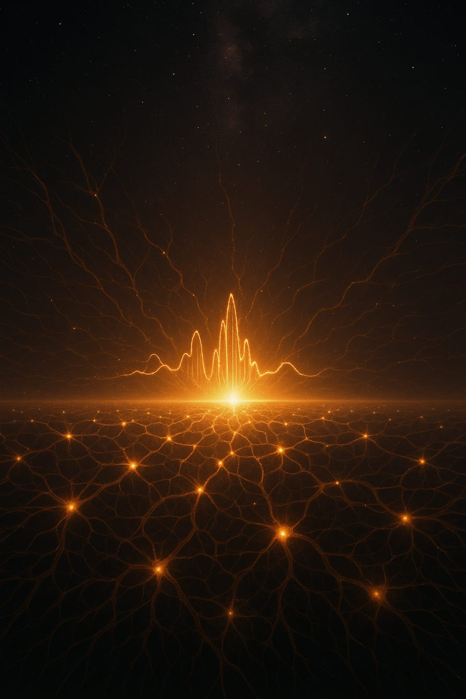
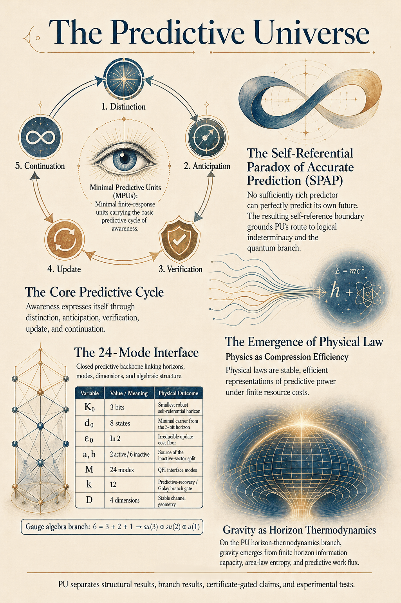

The Predictive Universe: A Conceptual Exploration
Abstract
The Predictive Universe (PU) framework is epistemically consciousness-first and operationally prediction-first. It begins from Cogito-certified awareness: the unavoidable starting point of inquiry. PU then gives awareness an operational form as the minimal predictive cycle of distinction, anticipation, verification, update, and continuation. Physical law is modeled as the stable finite-resource structure that this predictive activity takes when constrained by self-reference, thermodynamic cost, and compression efficiency.
On this view, reality is modeled as a network of Minimal Predictive Units (MPUs): minimal finite-response carriers of predictive structure. The philosophical reading interprets each MPU as a locus of minimal awareness, while the formal framework treats MPUs as the basic operational units through which prediction becomes measurable, shareable, and law-governed. Quantum probability, the arrow of time, Prediction Relativity, spacetime, gravity, gauge structure, particle physics, constants, cosmology, life, mathematics, and high-level consciousness are then explored as connected expressions of one predictive order.
For a more detailed exploration of these ideas including visualizations:
get the full paper (GitHub).
1. Introduction: Rethinking Reality Through Prediction
How do physical law, consciousness, meaning, and mathematics fit together? The Predictive Universe framework answers by placing prediction at the center. A universe is approached as an ordered process of distinction, anticipation, verification, and update. The familiar physical world then appears as the stable structure generated by many finite predictive perspectives interacting under shared constraints.
This makes PU naturally compatible with certain idealist philosophies. Awareness is the one datum that cannot be removed from inquiry. PU then asks what awareness must do in order to have a world: it must distinguish, remember, predict, verify, and update. Physical law is the disciplined form of that process when it becomes finite, shared, thermodynamic, and self-referential.
Imagine the universe as a vast network of elemental predictive agents. These agents, called Minimal Predictive Units, constantly attempt to model their surroundings, learn from error, and maintain enough stability to keep predicting. They cannot predict perfectly, because self-reference produces logical limits. They cannot update for free, because irreversible update has thermodynamic cost. They cannot carry unlimited distinctions, because finite channels have finite capacity. From these constraints, PU builds a route from minimal awareness to quantum mechanics, spacetime, gravity, gauge forces, particle structure, cosmology, life, mathematics, and complex consciousness. The same route explains why PU treats open problems through status discipline: some are structural derivations, some are conditional branches, some are certificate-gated numerical programs, and some remain experimental frontiers.
The route can be read in four moves. First, the Cogito gives a directly given locus of awareness. Second, awareness becomes operational as prediction: distinction, anticipation, verification, update, and continuation. Third, finite self-reference and cost select MPUs and a closed discrete ledger. Fourth, interacting MPU populations recover the physics branches: quantum formalism, spacetime, gravity, gauge structure, constants, cosmology, life, and higher-order consciousness under their stated status gates.
1.1 I Predict, Therefore I Am
PU begins from the Cogito: conscious awareness is the self-verifying certainty at the root of inquiry. The act of doubting, questioning, perceiving, or reasoning already confirms the presence of awareness. But PU sharpens the Cogito operationally: the activity called thinking is not passive presence. It is predictive process. To doubt is to test; to question is to anticipate an answer; to perceive is to organize appearances into expected causes; to reason is to predict what follows from what.
In this sense, the Cogito becomes: I predict, therefore I am. This does not replace the original certainty that awareness exists. It identifies the operational form that awareness takes when it becomes knowledge-bearing. At least one locus of conscious awareness, ℂ, is directly given; that locus is immediately active as a system of distinction, anticipation, verification, update, and continuation.
The first distinction is therefore not an inert division between self and world. It is the first predictive contrast: awareness distinguishes the certainty of its own occurrence from the contents, patterns, memories, and appearances it must evaluate. From that contrast, awareness becomes structured. It separates, relates, remembers, expects, compares expectation with outcome, and revises its state.
Predictionism names this Cogito-grounded view of awareness as active predictive structure. Knowledge is possible because awareness does not merely contain experiences; it uses distinctions to anticipate, verify, and update. Prediction is the minimal operational form awareness takes when it becomes organized enough to support inquiry.
The formal PU derivations follow the finite conditions of this predictive Cogito: self-reference, thermodynamic cost, compression efficiency, and physical instantiation. The philosophical reading identifies the predictive cycle as the minimal structure of awareness, while the physics develops the finite-resource laws that such predictive structure can stably instantiate.
1.2 Predictionism: Logic from Cogito
Predictionism sharpens the Cogito into an operational principle: I predict, therefore I am. Thinking already involves prediction. Doubt tests a possibility. A question anticipates an answer. Perception organizes appearances into expected causes. Reasoning anticipates what follows from given distinctions.
The first certainty is the occurrence of awareness. Any denial of that occurrence still performs an act of awareness. This gives PU its first verified distinction: awareness occurs, marked as 1; what is not verified with the same certainty is marked as 0. The self/non-self contrast begins here: the verified occurrence of awareness stands apart from the contents, appearances, memories, and world-claims it evaluates.
Prediction turns this binary distinction into logic. A prediction must meet an outcome. At update, the system distinguishes verified from unverified, success from failure, retained from revised. Let V(S) be the verification value of a statement or prediction S, with V(S) = 1 when verified and V(S) = 0 when unverified.
Negation follows from reversal of verification:
V(¬S) = 1 - V(S)
Conjunction follows from joint verification:
V(S1 ∧ S2) = min(V(S1), V(S2))
Disjunction follows from allowed alternatives:
V(S1 ∨ S2) = max(V(S1), V(S2))
Logic is the invariant grammar of predictive verification. A system that distinguishes, anticipates, verifies, updates, composes predictions, and preserves outcomes already carries the roots of Boolean logic. These principles are immutable because any attempted denial still depends on distinction, verification, and update.
Computation follows from the same binary root. A computational state is a retained distinction; an operation is a rule-governed update; an output is a verified result. Since negation, conjunction, and disjunction are sufficient to build finite computation, the predictive Cogito supplies a foundation for logic, mathematics, and computation in one chain: awareness, distinction, prediction, verification, composition, and update.
1.3 Consciousness-First Resolution of the Hard Problem
The hard problem of consciousness arises most sharply for views that begin with non-conscious matter and then try to explain how subjective experience appears. PU begins from the one fact that cannot coherently be doubted: conscious awareness is already present. Any act of doubting, questioning, measuring, or explaining confirms the occurrence of awareness.
This makes PU naturally compatible with idealism. Idealism takes consciousness as the foundation of reality, giving the framework the simplest starting point available to inquiry. It does not need to generate experience from something defined as non-experiential. It begins where every investigation begins: within awareness.
Materialism starts with matter as primary and must bridge the gap from physical process to subjective experience. Dualism starts with two basic kinds of reality, mind and matter, and then must explain how they interact. Idealism uses a smaller ontology. Consciousness is fundamental, while matter is modeled as stable, lawful, shareable structure within conscious experience.
PU gives this idealist starting point an operational form through prediction. Awareness makes distinctions; distinctions support anticipation; anticipation requires verification; verification drives update; update carries cost; efficient update selects stable forms. Physical law is the stable finite-resource organization of predictive awareness.
Minimal Predictive Units carry this structure at the most basic level. On the Minimal Awareness interpretive postulate, each MPU contains minimal awareness: the capacity to distinguish, anticipate, verify, update, and continue. Matter is modeled as the public, cost-bearing structure formed by interacting MPUs under shared predictive constraints.
Complex consciousness arises when many MPU cycles integrate into a shared system-level context state. Unified minds are higher-order predictive organizations built from coordinated MPU aggregates. The hard problem is resolved at the foundation because consciousness is the starting point, while physics explains how predictive awareness becomes stable, measurable, shared, and law-governed.

Universe 00110000
2. The Foundations: Meaningful Prediction, Information, Efficiency, Cost, and Logic
2.1 The Conditions for Meaningful Prediction
For any system to predict meaningfully, certain structures must be present. It needs temporal order, because prediction distinguishes what is anticipated from what is later verified. It needs distinctions, because a predictor must separate states that matter from states that do not. It needs causal regularity, because without reliable patterns, anticipation cannot outperform chance. It needs memory, because update requires comparison between what was expected and what occurred. It needs finite resources, because every real predictor must operate with limited capacity, time, and energy.
PU treats these requirements as operational necessities. They are the conditions under which a predictive world can exist. Time, causality, information, and meaning are therefore embedded predictive structures. They are the structures required for finite awareness to become a working predictive system.
2.2 POP, PCE, and PPI
The first large-scale drive in PU is the Prediction Optimization Problem (POP). A predictive system seeks to improve the quality of its expectations about relevant future states. It does this under limited resources, including energy, time, memory, and complexity. Predictive improvement is valuable only inside a viable window: too little success gives noise, while perfect success removes error signals and blocks adaptation.
The second drive is the Principle of Compression Efficiency (PCE). PCE selects the least costly representation that preserves predictive power. It is the pressure that removes redundant descriptions, favors stable patterns, turns operational equivalence into physical equivalence, and makes efficient structures persist. PCE is why PU treats many apparently separate physical laws as compressed solutions to the same underlying problem.
The third bridge is the Principle of Physical Instantiation (PPI). PPI says that operational distinctions become physical only when they are finite-response, cost-bearing, and protocol-detectable. A distinction that makes no difference to any finite predictive protocol falls outside extra physical ontology. This is how PU keeps its idealism-compatible foundation disciplined: physical reality is the finite, testable, cost-bearing structure of predictive distinction.
These elements can be read as public versions of PU's formal commitments. POP says prediction is optimized under finite resources. Predictive Capacity says successful prediction requires information-bearing internal models or response structures. The viable prediction window, called the Space of Becoming, says a system must remain between collapse into noise and perfect closure without error signal. PCE and PPI then discipline which structures persist and which distinctions count as physical.
2.3 Distinction, Information, Knowledge, and Meaning
At the deepest level, PU treats distinction as prior to information. Information exists only when a difference can improve prediction for some system. A distinction separates one possible state from another. Prediction gives the distinction temporal direction. Verification gives it consequence. Update gives it memory.
Within PU, information is a physically embodied pattern that can improve predictive quality. Knowledge is realized predictive capacity: the ability of internal models to generate successful expectations. Meaning is the functional significance of information for the predictive life of a system. A pattern means something when using it changes what the system can anticipate, avoid, pursue, preserve, or become.
This gives the framework a bridge between philosophy and science. Meaning is not a purely subjective decoration, and it is not reducible to raw data. It is the operational role a distinction plays inside a predictive cycle.
2.4 The Cost of Knowing
Prediction is physically costly. A system needs structure to store models, energy to update them, time to compare them with outcomes, and capacity to preserve relevant distinctions. PU describes this cost using Predictive Physical Complexity, CP, and operational proxy complexity, Cv. Stable systems align their internal accounting with real physical expenditure:
CP(v) = ⟨Cv⟩x
The cost of self-reference is especially important. When a predictor tries to include itself in what it predicts, it encounters the Self-Referential Paradox of Accurate Prediction (SPAP). No sufficiently rich system can perfectly predict its own future state in all relevant respects. The attempt produces contradiction, infinite regress, or update instability.
PU pairs SPAP with Reflexive Undecidability (RUD). In a sufficiently rich Property-R class, no embedded predictor can decide every statement about its own future behavior within bounded resources. SPAP limits perfect accuracy; RUD limits total self-decision. Together they define Logical Indeterminacy, the finite self-reference boundary from which the quantum branch later descends.
SPAP gives the framework its first deep limit: perfect self-knowledge is forbidden by logic before it is forbidden by physics. Physical systems then express this limit through a log-enhanced quadratic divergence in the verification/update resources required to approach the SPAP boundary:
Cuni(δSPAP) = Ω(log(1/δSPAP) / δSPAP2)
Here δSPAP = αSPAP - α. The same asymptotic lower bound transfers to Cpred(α) when the chosen predictive-complexity notion lower-bounds those verification/update operations.
Because update must break perfect self-reference, every completed predictive cycle carries an irreducible structural entropy cost on the minimal PCE-Attractor branch:
ε0 = ln 2
Any physical implementation has εphys = ε0 + εdiss ≥ ε0; saturation is the ideal overhead-free branch and applies only when realized updates meet that gate.
2.5 Minimal Predictive Units
PU models the substrate of reality as a network of Minimal Predictive Units (MPUs). An MPU is the minimal finite-response predictive cycle: distinction, prediction, verification, update, and persistence under cost. Philosophically, it is interpreted as a locus of minimal awareness. Formally, it is the smallest operational structure able to carry self-referential prediction under SPAP and PCE.
MPUs sit at the physical foundation because PU chooses the foundation by maximal epistemic certainty. The Cogito gives that certainty as an occurring process: to doubt, inquire, perceive, or reason is already to anticipate, test, compare, and update. The predictive character of the Cogito is therefore prior to PU's formal model; PU formalizes it as the minimal cycle of distinction, anticipation, verification, update, and persistence under cost. The MPU is the smallest finite physical carrier of that Cogito-rooted predictive process: the basic unit through which the most certain foundation becomes stable, measurable, shareable, and law-governed.
Each MPU carries a perspective, an internal predictive state, and a finite interaction capacity. Between interactions, its state follows regular evolution. During an interaction, it undergoes an irreversible update called an Evolve event. Technically, these interaction updates are modeled by Reflexive Interaction Dynamics (RID), with the nondeterministic branch (ND-RID) supplying the stochastic actualization step. This event is where prediction meets actualization: possibilities become outcome-relative records, and the perspective shifts.
2.6 The Closed Discrete Backbone
One reason PU is powerful is that its central physical branches are tied to a compact discrete backbone. On the minimal finite-response PCE-Attractor branch, the recurrent minimal-branch ledger is:
K0 = 3, d0 = 8, ε0 = ln 2, a = 2, b = 6, M = 24, k = 12, D = 4
This ledger is read under the branch being summarized. Some arrows in PU diagrams represent derivational dependence, while others represent ledger order or downstream branch use. SPAP supplies the self-reference boundary; the smallest robust self-referential horizon has three bits, giving an eight-state minimal carrier. Irreversible update has a minimal entropy cost. The most efficient active kernel has two states, leaving a six-state inactive complement. The active-inactive interface has twenty-four Quantum Fisher Information modes. On the predictive-recovery MacWilliams branch, those twenty-four interface modes split into k = 12 prediction modes and twelve recovery modes, selecting the extended Golay code parameters [24, 12, 8] under the fixed-rate distance gate. Mode-channel matching then selects four-dimensional spacetime. This same backbone feeds the quantum, gauge, dimensional, horizon, recovery-code, and fine-structure branches.
Universe 00110000
3. Quantum Reality from Predictive Logic
3.1 Probability, Born Weights, and Actualization
Quantum behavior appears when finite predictive systems must represent possibilities before an irreversible update. Superposition is the operational state of unresolved predictive alternatives. Measurement is the Evolve event that actualizes one outcome relative to a perspective. Randomness is the physical expression of SPAP-limited self-reference and finite update.
In the updated PU chain, the Born rule is not inserted as a separate quantum postulate. PCE removes response-null contextual labels, yielding non-contextual additivity over operationally equivalent projectors. On the MPU Hilbert branch, the Gleason-Busch representation fixes the probability assignment to the Born form:
P(k) = |⟨k|ψ⟩s|2
Quantum probability is therefore the Hilbert-space descent of self-reference-limited predictive actualization. The probabilities are the stable weights assigned by a finite predictive substrate when it must update under SPAP, PCE, and finite-response consistency.
On the ordinary local branch, PU recovers standard quantum behavior. Entanglement is the joint predictive structure of systems whose outcome records cannot be separated into independent local ledgers without losing operational content. Decoherence is the loss of usable phase distinction when a system becomes embedded in a larger interaction context. Context-dependent CC effects are kept in validation-gated branches, so standard quantum predictions remain the baseline for ordinary local experiments.
3.2 Hilbert Space, Schrödinger Evolution, and Perspective
The MPU state can be represented as a pair: a Hilbert state and a perspective index. Between interactions, the state evolves coherently, giving the familiar Schrödinger-type dynamics:
iℏ d|ψ⟩/dt = H|ψ⟩
At interaction, the state actualizes relative to a perspective and the perspective itself shifts. This perspectival structure helps PU address puzzles such as measurement and Wigner's friend. Actuality is indexed by finite perspectives, then reconciled through interaction, update, and consistency constraints.
The uncertainty principle has the same origin. A single finite-response ledger cannot give zero-error access to all complementary sharp observables. Mathematically, this descends to noncommuting operators. Operationally, it is the impossibility of compressing all distinctions into one perfect self-transparent predictive record.
3.3 The Arrow of Time
Prediction requires an order: anticipation first, verification second, update third. Because update is irreversible on SPAP-limited branches and carries entropy cost, time obtains a direction. The arrow of time is the thermodynamic expression of finite predictive systems having to update from expectation to outcome.
3.4 Prediction Relativity
Prediction Relativity extends the logic of relativity into the cost of self-knowledge. In ordinary relativity, the speed of light is the invariant limit governing motion and signal propagation. In PU, the same kind of invariant limit appears inside prediction: no finite system can obtain perfect self-knowledge, because approaching the SPAP boundary requires divergent verification and update resources.
The central identity is:
cγ = cε
Here cγ names the invariant motion limit and cε names the invariant predictive transgression limit. The equality is a branch result: finite motion and finite self-knowledge share one cost boundary. Acceleration, Unruh temperature, horizon formation, and predictive update cost become linked expressions of the same finite-resource constraint.
This gives PU a distinctive answer to the problem of time and the meaning of relativity. Time is the order required for prediction, the arrow of time is the entropy cost of update, and relativistic speed limits express the operational limit of finite systems that cannot outrun their own conditions of verification.
Universe 00110000
4. Spacetime, Gravity, and Forces as Emergent Structures
4.1 Operational Continuum and D = 4
In PU, spacetime is built from MPU relations. The apparent distance between MPUs is defined by the cost and fidelity of propagating predictive information. PCE favors stable propagation structures because chaotic or incoherent networks waste resources and destroy predictive utility. On the geometrically regular branch, these propagation-cost relations admit an operational continuum description at finite macroscopic resolution.
This continuum is a finite-resolution closure that behaves like a smooth Lorentzian spacetime manifold when viewed at the appropriate scale. The dimensionality is fixed on the minimal branch by the twenty-four QFI interface modes, which are matched to finite channel geometry through the mode-channel condition M = K(D). The isolated positive integer solution is D = 4, giving the effective four-dimensional spacetime branch used by the continuum and gravity derivations.
4.2 Gravity as Horizon Thermodynamics
Gravity emerges when the finite information capacity of MPU interactions is applied to causal horizons. Each horizon is crossed by a finite number of effective channels. Because each channel has bounded capacity and irreversible update cost, the maximum distinguishable information associated with a region scales with boundary area. This gives the horizon entropy Area Law from MPU channel counting.
On the local KMS/LTE branch, PU applies the Clausius relation to local causal horizons:
δQ = TδS
The heat flow δQ is identified with the flux of predictive work through the MPU stress-energy tensor. The entropy change δS is fixed by the horizon Area Law. The temperature is the local Unruh temperature. Requiring this relation to hold for all local null horizons yields Einstein's Field Equations as an equation of state:
Rμν - ½ R gμν + Λ gμν = (8πG / c4) Tμν(MPU)
The scale of gravity is fixed by the effective horizon information density:
G = c3/(4ℏΣI)
Here ΣI = σeff linkCmax. Gravity is therefore inversely related to effective horizon information density. Lower effective information density produces a stronger effective gravitational response.
4.3 Black Holes and Retained Information
Black holes become limiting cases of horizon-channel capacity. The event horizon saturates finite information-transfer structure, and the Area Law follows from the number of effective channels crossing the causal boundary. PU treats information as retained at the global response level. Exterior recovery from Hawking radiation and full Page-curve behavior require additional scrambling and continuity certificates. The Perspectival Information Channel reframes the paradox as a problem of local sequential recovery.
4.4 Gauge Structure and the Standard Model Branch
Gauge fields emerge as coherence mechanisms for finite predictive states. A complex Hilbert state has local phase freedom. To compare predictive states across the network, the system needs a connection field that compensates local phase changes. On the efficient branch, this gives the U(1) structure of electromagnetism.
The updated framework goes further. On the finite-response block-frame branch, the minimal backbone gives d0 = 8 and active rank a = 2, leaving an inactive sector b = 6. PCE selection of the capacity-saturating inactive-sector partition gives the split:
6 = 3 + 2 + 1
The determinant-compatible gauge algebra associated with this split is su(3) ⊕ su(2) ⊕ u(1), matching the Standard Model gauge algebra on that branch. The claim is scoped to the determinant-compatible block-frame/interface category; classification of all compact connected subgroups of U(6) is outside this branch claim. Quantitative thresholds, masses, running, and flavor remain separate certificate-dependent sectors.
4.5 Constants and the Fine-Structure Core
The same backbone feeds the PU derivation of the Thomson-limit fine-structure constant core. The twenty-four QFI interface modes saturate the ln 8 capacity of the minimal carrier, fixing the bare rate coordinate:
u* = 21/8 - 1
After Predictive-Ward normalization, interface correction, curvature correction, and transport correction, the framework obtains the closed-form Thomson-limit core:
α0-1 = 4π/u* - π/√K0 + (πu*/(24√K0)) sinc(u*)
α0-1 = 137.036092055...
The comparison row is residual-gated: αcert-1 = α0-1 + Rα. The residual must be fixed before empirical comparison and cannot be used as an after-the-fact fit.
More generally, PU treats apparent constants as joint readouts of the recurrent within-unit ledger (K0, d0, ε0, a, b, M, k, D), population configuration, accepted overlap maps, and certificate gates. The fine-tuning question is therefore handled by checking whether a sector's parent data reduce to the closed ledger and accepted certificates. Closed rows inherit their stated status; certificate-pending rows remain audit targets.
4.6 Dark Sector and Cosmology
Because G is a macroscopic response parameter tied to effective horizon information density, PU allows environment-dependent gravitational response kernels. At galactic scales, the model expresses this through an effective kernel G(R) constrained by local-gravity limits and acceleration-scale regularities. At cluster scales, the framework favors a separate non-local source-modification response, often described as predictive matter, with no universal large-scale change in G assumed. Cosmological dark-energy-like behavior remains a branch/model-level adaptation hypothesis that must pass independent tests.
Universe 00110000
5. Consciousness, Life, and Biological Organization
5.1 From Minimal Awareness to Unified Experience
If MPUs are read philosophically as loci of minimal awareness, a further question arises: how can many such units form a unified conscious perspective? PU answers through predictive binding. A complex system becomes unified when many predictive processes are compressed into a shared context state, contextS(t), that functions as the system's minimal sufficient self-model.
Unity of consciousness is therefore operational integration. Many local predictive updates become one coherent trajectory of meaning because they are organized around a shared, compressed, system-level context. SPAP prevents perfect self-transparency, so conscious unity is real and always incomplete. This gives a natural place for introspective opacity, changing attention, and the sense of a self that persists while continuously updating.
5.2 The Consciousness Complexity Hypothesis
The Consciousness Complexity (CC) hypothesis concerns high-complexity MPU aggregates. Such aggregates may use their integrated context state to bias probabilistic Evolve outcomes within strict limits. The effect is a constrained context-dependent statistical influence on transitions already governed by uncertainty.
Operationally, CC is the norm of the probability-modification map:
CC(S) = ||LS||op = supρ,E |tr(LS(ρ)E)|
For a retained event algebra, this quantity bounds the maximum observed deviation from the Born baseline.
PU separates ordinary local quantum evolution from stronger, validation-gated context effects. On the local CPTP branch, context-dependent biasing remains compatible with no deterministic faster-than-light signaling. More radical nonlocal or state-mediated marginal anomalies are separated experimental branches. The empirical target is carefully controlled detection of context-dependent deviations from baseline Born statistics under strict causality and calibration constraints.
5.3 Life as Predictive Self-Maintenance
PU also gives a predictive definition of life. A living system is a self-maintaining predictive organization that uses resources to preserve, repair, and improve its own future viability. Metabolism is resource acquisition for prediction. Reproduction is predictive continuity across generations. Evolution is PCE acting across populations: structures that compress environmental regularities efficiently tend to persist, while inefficient or fragile structures disappear.
This places biology inside the same framework while preserving its organized character. Living systems are predictive organizations that preserve distinctions, manage error, and transmit viable models of the world. The genetic code is treated as biological error-tolerant organization shaped by predictive robustness, with no literal formal Golay-code identification required.
6. Philosophy, Mathematics, and Meaning
6.1 The Effectiveness of Mathematics
PU reframes the puzzle of why mathematics describes physics so well. Mathematics is the abstract grammar of stable distinction, relation, symmetry, transformation, and proof. Physics is the finite, cost-bearing instantiation of those structures inside predictive reality. They meet because both are governed by compression, consistency, finite response, and operational equivalence.
This is why the framework gives special significance to structures such as the 24-mode backbone, the predictive-recovery k = 12 gate, Golay/Leech geometry, and finite-response extremal configurations. They appear as efficient structures selected by finite response, error correction, capacity, and symmetry constraints. Their physical relevance remains branch-labeled, while their recurring role expresses the same principle: stable reality is compressed predictive structure.
6.2 Why Anything Exists
The question "Why is there something rather than nothing?" is treated by PU as meaningful and structurally closed. Any system capable of asking the question is already inside the domain called something. A full internal specification of the totality would have to include the questioner, the act of specification, the specification itself, and the rules that make specification possible.
This creates self-inclusion. A predictor cannot close a complete account of the whole that also contains its own act of accounting. The obstruction is SPAP at the scale of existence: total self-description generates diagonal obstruction, infinite regress, or an unstable update loop. PU therefore places the fundamental question in a third category. It is meaningful, because it arises from real awareness and real distinction. It is structurally closed, because no embedded predictor can complete it from inside the totality it is trying to describe.
6.3 Monstrous Moonshine and Vacuum Symmetry
PU also gives a public-facing role to Monster Moonshine. In mathematics, Monstrous Moonshine is the surprising relation between the Monster group, modular functions, and vertex operator algebras. In PU, the relation is read through the conditional Leech/Moonshine branch of the 24-mode backbone:
ε = ln 2 → a = 2 → M = 24 → k = 12 → Λ24 → V♮ → 𝕄
The chain begins with the entropy floor and active-inactive split, reaches the 24-mode interface, then applies the predictive-recovery gate that fixes k = 12 on the Golay branch. It then enters the Leech structure and the Moonshine module. On that branch, the Monster group appears as a vacuum-symmetry endpoint. The claim is branch-resolved: Monster Moonshine is used as a mathematical signal of extreme predictive symmetry, with no free empirical fit. Its significance is that deep mathematical symmetry becomes intelligible as the symmetry of a vacuum-like predictive optimum.
6.4 Simulation Hypothesis
PU reframes the simulation hypothesis not primarily as a probability claim, but as a modeling language for finite, informational, consciousness-compatible reality. Since experience is the unavoidable starting point of inquiry, PU treats physical law as the stable predictive structure through which experience becomes ordered, shareable, and testable.
Consciousness is taken as the epistemic primitive, while matter is modeled as the lawful structure of predictive experience. PU begins from conscious experience and asks how prediction becomes constrained by finite capacity, compression, self-reference, and thermodynamic cost.
The simulation model is compatible with idealism because information processing is substrate independent. A predictive structure can be instantiated through different carriers while preserving the same operational law. This gives a direct model for matter as the public, lawful, finite-response structure of information within experience.
PU distinguishes a synthetic simulation from an authentic simulation. A synthetic simulation is externally controlled: its internal states can be overwritten, paused, replayed, or trivially predicted. It resembles a video game or film, where the world is an artifact managed by a controller outside the simulated order.
An authentic simulation is an information-processing world that maintains epistemic and control boundaries. It generates genuine novelty through its own internal dynamics, while any simulator remains outside the world's write-path. External agents may observe only through a non-interventional channel: they can read information about the simulation, while overwrite access, outcome steering, injected causes, and conservation-law alteration remain inaccessible. The observational cost is paid at the external observer interface, while the simulated world preserves internal causality, unpredictability, and autonomy.
The sharper question is whether any external access could bypass SPAP, PCE, finite capacity, and thermodynamic cost. PU treats such bypassing as structurally forbidden for authentic worlds. This is why the simulation hypothesis is a strong model for PU: it is efficient, natural, information-theoretic, and suited to explaining observation, law, prediction, and consciousness within one coherent framework.
6.5 Classic Philosophical Problems
PU also gives a compact map of several classical philosophical problems. The goal is status-resolved orientation: each problem is assigned a predictive role, a structural constraint, or a boundary of meaningful inquiry.
| Problem | PU framing |
|---|---|
| Hard problem of consciousness | Conscious awareness is the epistemic starting point. The central task is explaining how awareness organizes into lawful shared structure. |
| Induction | Stable regularity is a condition for prediction. A world with no reliable structure cannot support meaningful prediction. |
| Gettier problem | Knowledge is prediction that survives verification and update. Justification must be connected to the predictive cycle that produced the successful expectation. |
| Problem of the criterion | The Cogito gives a self-certifying starting point. Verification supplies the operational criterion for later knowledge claims. |
| Münchhausen trilemma | The Cogito supplies a foundation that is self-verifying at the point of awareness, while later claims must pass finite predictive verification. |
| Universals | Mathematical universals become physically relevant when they are instantiated as finite, cost-bearing predictive invariants. |
| Other minds | Plural predictive centers are required for shared objective structure, cross-perspective verification, and stable public records. |
| Something rather than nothing | The question is meaningful and structurally closed. An embedded predictor cannot complete a total self-description of existence. |
6.6 Explanatory Compression
The value of PU is explanatory compression. The same operational principles recur across domains: awareness makes distinctions, prediction updates them, self-reference imposes limits, irreversible update has thermodynamic cost, PCE selects efficient structure, and stable branches become physical law.
This creates a single map. Quantum randomness follows from self-reference-limited actualization. The arrow of time follows from irreversible update. Prediction Relativity links motion limits with self-knowledge limits. Spacetime follows from efficient propagation geometry. Gravity follows from horizon thermodynamics. Gauge structure follows from the minimal inactive-sector split. The fine-structure constant core is assigned to the same 24-mode backbone with a residual gate. Life follows from predictive self-maintenance. Consciousness is the starting condition that makes the story meaningful.
7. PU and Open Problems in Physics and Mathematics
PU is a status-resolved map of open problems. It assigns problems to different levels. Some are structural consequences of the framework, some are branch-level derivations, some are conditional mathematical programs, some require numerical certificates, and some are empirical model layers. This distinction is central to how PU handles theory of everything claims, particle physics, singularities, infinities, time, and mathematical existence problems.
7.1 Standards for Addressing an Open Problem
For each open problem, PU asks four questions. First, what operational distinction must be explained? Second, what finite predictive cost carries that distinction? Third, is the result theorem-level, branch-level, certificate-gated, model-layer, or experimental? Fourth, what observation, calculation, or certificate could count against it?
| Status | Meaning in PU |
|---|---|
| Structural or theorem-level | Follows from the stated logic of prediction, finite response, SPAP, PCE, or PPI. |
| Branch-level | Follows after explicit branch assumptions, such as the minimal finite-response branch, local KMS/LTE branch, or block-frame gauge branch. |
| Certificate-gated | Requires a fixed precomparison certificate, residual interval, spectral tuple, or numerical audit before empirical comparison. |
| Forward-locked | The value, branch, certificate, residual interval, evidence protocol, and falsification rule are fixed before the validation data are collected. |
| Conditional mathematical program | Gives a constructive route or criterion while leaving a full proof, such as a Clay-level existence proof, as an explicit completion task. |
| Model-layer or experimental | Provides a physical model, test protocol, or data-facing hypothesis that must survive observation. |

Universe 00110000
7.2 Theory of Everything
The theory of everything problem asks whether one coherent framework can connect all physical domains: quantum mechanics, spacetime, gravity, forces, constants, matter, cosmology, and observers. PU addresses the problem by using prediction as the common operational substrate. Quantum mechanics arises from self-reference-limited actualization. Spacetime arises from efficient propagation geometry. Gravity arises from horizon thermodynamics. Gauge structure arises from finite-response coherence. Constants become compressed boundary coordinates of the same predictive backbone.
The effort to unify the theory of gravity with the principles of quantum mechanics asks how general relativity and quantum mechanics can belong to one consistent structure. PU does this through finite horizon channels. The quantum side is carried by MPU Hilbert-state evolution and perspective-indexed actualization. The gravitational side is carried by horizon entropy, local Unruh temperature, and the Clausius relation. Einstein's equations then appear as a thermodynamic equation of state on the local causal-horizon branch.
The problem of time asks why physical time has a direction, why time is treated differently in quantum mechanics and general relativity, and how temporal order arises. PU assigns time to the predictive cycle: anticipation, verification, update, and persistence. The arrow of time follows from irreversible update cost. Prediction Relativity then links temporal order, motion limits, and self-knowledge limits through one finite-resource boundary.
This gives PU a route to emergent spacetime, holographic behavior, black-hole information, and dimensional selection. The continuum is a finite-resolution closure of propagation cost, while horizon area counts effective channel capacity. Black-hole information is treated as retained at the global response level, with Page-curve recovery requiring additional scrambling and continuity certificates.
| Open problem | Background | PU address |
|---|---|---|
| Dimensionality | Physics usually assumes four effective spacetime dimensions, while higher-dimensional theories often leave dimensional selection as a separate question. | The minimal branch matches the 24 QFI interface modes to finite channel geometry. The isolated positive integer solution is D = 4. |
| Black-hole information | Black holes appear to hide information behind horizons while Hawking radiation looks locally thermal. | Information is retained at the global response level. Local channels may look thermal, while recovery requires accepted scrambling and continuity certificates. |
| Measurement | Quantum theory requires a rule for how unresolved possibilities become outcome-relative records. | Measurement is an Evolve event: perspective-indexed actualization under SPAP, PCE, and finite-response consistency. |
7.3 Singularities, Infinities, and Continuum Limits
Singularities occur when a mathematical description produces infinite curvature, infinite density, or a breakdown of ordinary spacetime description, such as in classical descriptions of the Big Bang or black hole interiors. PU treats such infinities as signs that a continuum approximation has exceeded its operational domain. A real physical distinction must be finite-response, cost-bearing, and protocol-detectable.
On this view, the smooth spacetime manifold is a macroscopic approximation to finite predictive structure. The Planck-scale and horizon-channel branches impose finite resolution and finite information density. Computation-induced horizons and finite update costs provide a route to singularity exclusion: before an infinite operational distinction is physically instantiated, the system reaches a horizon, resolution bound, or update-cost barrier. Quantitative singularity modeling remains a formalized completion task.
This same standard applies to infinities in quantum field theory. PU accepts effective continuum mathematics as a powerful approximation, while physical ontology is assigned only to distinctions that survive finite response, certificate, and operational access. Infinite quantities must be renormalized, quotiented as response-null, or replaced by finite predictive ledgers.
7.4 Yang-Mills Existence, Mass Gap, and Confinement
The Yang-Mills existence and mass gap problem asks for a rigorous construction of non-abelian quantum Yang-Mills theory in four dimensions and proof that the theory has a positive mass gap. Physically, this is connected to the short range of the strong interaction and to confinement: isolated quarks and gluons are absent from low-energy observations.
PU addresses this problem through the finite-response gauge branch. Gauge fields are coherence mechanisms for comparing predictive states across a network. The Standard Model gauge algebra appears on the determinant-compatible inactive-sector split:
6 = 3 + 2 + 1, su(3) ⊕ su(2) ⊕ u(1)
For the Yang-Mills mass gap, PU uses a higher-form predictive ledger. Extended line and surface protocols carry response classes. On the confinement branch, an unbroken electric center one-form ledger with a positive surface gap enforces an area law for Wilson-loop behavior. In public terms: color-charged information cannot be separated at finite cost into isolated low-energy records. The observable spectrum is therefore organized into neutral, finite-response bound structures.
Status: conditional mathematical program. PU supplies a constructive criterion and physical mechanism for confinement-like behavior and positive gap structure. A full Clay-level proof would still require the accepted rigorous construction of the four-dimensional quantum theory, its Hilbert space or Euclidean measure, its locality and positivity properties, and its positive spectral gap.
7.5 Particle Physics and the Standard Model
Particle physics contains several open problems: why the Standard Model gauge group has its observed form, whether the forces unify, why there are three generations of matter, why particle masses and mixings have their specific pattern, why neutrinos are light, why the strong interaction preserves CP so accurately, why matter dominates antimatter, and why the electroweak scale is so much smaller than the Planck scale.
| Open problem | Background | PU address | Status |
|---|---|---|---|
| Gauge group | The Standard Model uses SU(3) × SU(2) × U(1), while the origin of this exact gauge structure is usually taken as input. | The minimal backbone gives d0 = 8, active rank a = 2, inactive sector b = 6, and the efficient split 6 = 3 + 2 + 1, yielding the matching gauge algebra on the block-frame branch. | Branch-level |
| Grand unification | The open question is whether electromagnetic, weak, and strong forces are different aspects of one deeper symmetry. | PU gives structural unification through one predictive backbone. Coupling thresholds and running remain spectral-gate tasks. | Structural plus certificate-gated |
| Three generations | Quarks and leptons appear in three repeated families, with different masses and mixings. | PU derives Ng = 3 as the minimal admissible count in the anomaly and CP family-charge class, with D4, E8, Leech, and M = 24 = 8 × 3 as compatibility layers. | Structural, with flavor model layers |
| Yukawa hierarchy | Particle masses differ by huge factors, and the Standard Model inserts these values as Yukawa couplings. | PU treats masses as relational update resistance and reorganizes multiplicative mass ratios into additive predictive costs. Detailed fermion masses require hierarchy, threshold, and normalization certificates. | Model layer with certificates |
| Neutrino mass | Neutrinos have small masses, and their exact absolute scale, ordering, and Dirac or Majorana character remain open. | PU assigns neutrino structure to the Takagi-Weyl and A2 closure branch, with PMNS angles, mass scale, and CP phase tied to stated geometric assumptions. | Conditional model branch |
| Strong CP | QCD permits a CP-violating angle, yet observed strong interactions preserve CP to extremely high precision. | PU uses a structural branch route in which a sigma-involution and positive-orientation real-Yukawa branch give θ̄ = 0 under stated assumptions. | Structural branch route |
| Baryon asymmetry | The early universe should have produced matter and antimatter in nearly equal amounts, yet the visible universe is matter-dominated. | PU realizes the Sakharov ingredients through anomaly inflow, CP-root structure, and out-of-equilibrium update. The baryon-to-entropy ratio is assigned to an efficiency, washout, and electroweak-threshold branch. | Model and thermal branch |
| Hierarchy problem | The electroweak scale is far smaller than the Planck scale, and ordinary quantum corrections make this separation difficult to stabilize. | PU treats the electroweak hierarchy as a predictive complexity exponent and threshold problem. The hierarchy is part of the spectral and mass-cost machinery. | Certificate-gated branch |
Three generations are shown as part of the Standard Model integration; their PU route is a separate anomaly/CP-family branch.
7.6 Spinors, Chirality, and CKM Flavor Mixing
The Standard Model branch described above explains how the determinant-compatible inactive-sector split 6 = 3 + 2 + 1 gives the gauge-algebra pattern su(3) ⊕ su(2) ⊕ u(1) on its stated branch. That result fixes the gauge-frame architecture, but it does not by itself complete the matter sector. A full particle account also needs spinorial matter, weak chirality, three generation spaces, and the flavor-mixing matrix that appears when the up-type and down-type quark mass bases are not aligned.
Spinors. On the emergent Lorentzian D = 4 branch, local spacetime frames are described by the Lorentz group and, when the spin obstruction is absent or locally bypassed, by its double cover Spin(1,3). PU connects this standard spinor structure to the two-state active kernel. The active rank a = 2 supplies the minimal amplitude carrier whose projective rotations act like ordinary spatial rotations on rays while retaining the double-cover sign on amplitudes. In public terms, a full turn can return the physical ray to itself while reversing the underlying amplitude sign. This is the operational signature of spinorial matter. In the continuum language, left-handed and right-handed Weyl spinors transform as the two inequivalent spinor representations of Spin(1,3), and a Dirac spinor combines the two chiral parts.
Chirality. Chirality enters when the finite-response gauge branch is restricted to the weak interaction. On the predictive-recovery branch, the twenty-four interface modes split into k = 12 signal modes and twelve recovery modes. On the weak-left projection branch, the weak interaction selects a Lagrangian half-polarization of the signal space, giving
nL = k / 2 = 6
These six left-chiral modes couple to the six-dimensional inactive reservoir b = 6. On the row-pair branch, the same six-dimensional weak-left space is organized as
ℝ6 ≅ ℝ3generation ⊗ ℝ2weak
This gives a compact public interpretation: three generation slots, each carrying a weak doublet structure. The left-handed quark and lepton doublets are therefore response-active under SU(2)L, while the right-handed fields are weak singlets that still participate in hypercharge and Yukawa structure. This is why PU treats weak chirality as a branch feature of the finite-response Standard Model reconstruction, not as a separate arbitrary add-on.
Flavor mixing. Once three generations are present, the quark mass bases need not coincide with the weak-interaction basis. In ordinary Standard Model language, the CKM matrix is the mismatch between the left-handed diagonalization maps of the up-type and down-type Yukawa sectors:
VCKM = UuL† UdL
PU reads this mismatch geometrically. The generation states occupy positions and transport paths on the flavor-generation manifold, with the up and down sectors carrying different geometric orientations. The CKM entries are then not treated as independent arbitrary angles. They are modeled as overlap and holonomy data: wavefunction overlap gives the magnitudes of mixing, while Berry holonomy around flavor-changing loops gives the CP-violating phase. The public formula is:
|Vij| = ℘ij × Οij
Here ℘ij is a geometric projection factor, and Οij is the overlap factor between generation states. In the Gaussian-overlap branch used for the CKM sector, the overlap has the schematic form
Οij ∼ exp(-α d2eff) × |sin(Θij/2)|, α = 3/2
The hierarchy of CKM magnitudes then has a simple interpretation. Heavy-generation transitions are tunneling-like and are exponentially suppressed. The 3-to-2 transition gives
|Vcb| = √(2/3) e-3 ≈ 0.0407
The 3-to-1 transition includes interference between up-sector and down-sector paths, producing
|Vub| ≈ 0.00392
By contrast, the light-generation Cabibbo angle is not primarily an exponential tunneling effect. It comes from geometric frustration between the up-sector and down-sector orientations. With the A2 root-weight projection and the curvature correction on the stated branch, PU writes the public result as
|Vus| = (√3/2) sin(15.15°) fcurv ≈ 0.2261
The CP-violating CKM phase is assigned to Berry holonomy around the minimal flavor-changing loop. In the branch language, the flat Berry-area value is
δflat = 2 arctan(√2 / 2) = 70.53°
Finite generation-subspace averaging then applies the coherent sinc factor
fsinc = sinc(1/√3) ≈ 0.9454
giving the CKM phase
δCKM = 70.53° × sinc(1/√3) ≈ 66.7°
Combining the directly modeled entries with unitarity gives the following public magnitude summary:
| CKM magnitude matrix | Approximate PU branch value |
|---|---|
| First row | |Vud| ≈ 0.9741, |Vus| ≈ 0.2261, |Vub| ≈ 0.00392 |
| Second row | |Vcd| ≈ 0.2260, |Vcs| ≈ 0.9732, |Vcb| ≈ 0.0407 |
| Third row | |Vtd| ≈ 0.0087, |Vts| ≈ 0.0399, |Vtb| ≈ 0.9992 |
| CP phase | δCKM ≈ 66.7° |
This also clarifies the difference between weak CP violation and strong CP. The CKM phase is a relative flavor holonomy: it is generated by transport around a loop in the generation sector. The strong-CP angle belongs to a different determinant-line and orientation branch. PU can therefore allow a nonzero CKM phase while still assigning θ̄ = 0 to the strong-CP branch under its stated assumptions.
Status. The spinor statement is branch-derived from the active-kernel double-cover and emergent Lorentzian-spacetime structure. The chirality statement is branch-level on the weak-left projection and row-pair branches. The CKM magnitudes and phase are flavor-model outputs: they require the adopted generation geometry, overlap model, stiffness/curvature choices, Berry-area certificate, and unitarity closure. They should therefore be presented as certificate-gated flavor-branch results, not as consequences of 6 = 3 + 2 + 1 alone.
7.7 Cosmology and Constants
Cosmology contains open questions about inflation, the horizon problem, the cosmological constant, dark matter, dark energy, Hubble tension, matter-antimatter asymmetry, the size and shape of the universe, and the origin of the conditions that allow anything to exist. PU approaches these through finite horizon information, environment-dependent gravitational response, vacuum complexity, and the same predictive status discipline used elsewhere.
| Problem | Background | PU address |
|---|---|---|
| Dimensionless constants | Physics measures constants such as the fine-structure constant, while their deeper origin remains unclear. | PU treats constants as normalized predictive shadow prices or boundary coordinates. The fine-structure core comes from the 24-mode backbone with a residual gate fixed before comparison. |
| Cosmological constant | Vacuum energy estimates and observed cosmic acceleration differ by an enormous hierarchy in standard treatments. | PU assigns the vacuum scale to a complexity hierarchy on the Appendix U branch. Numerical promotion requires the named Fredholm, determinant, and prefactor certificates. |
| Dark matter | Galaxies and clusters show gravitational behavior usually attributed to unseen matter or modified gravity. | PU allows environment-dependent response kernels tied to effective horizon information density. Galactic and cluster regimes are kept as separate response branches. |
| Dark energy | The universe appears to undergo accelerated expansion, and the cause of that behavior remains open. | PU treats dark-energy-like behavior as a vacuum-response and cosmological adaptation branch that must pass independent tests. |
| Hubble tension | Early-universe and local measurements of the expansion rate disagree under the standard cosmological model. | PU places this in the modified-cosmology and response-kernel sector. Any proposed resolution must keep local gravity, lensing, CMB, and expansion data inside one closed error budget. |
7.8 Mathematical Problems and Physical Existence
PU distinguishes mathematical existence from physical instantiation. A structure may be mathematically consistent, finitely describable, finitely generable, certificate-accessible, physically instantiated, and observer-accessible at different levels. PPI prevents the article from treating every mathematical object as a physical object. A mathematical structure becomes physically relevant when it is carried by finite response, cost, protocol access, and predictive stability.
This standard matters for Yang-Mills, quantum field theory, infinities, continua, and exact symmetry. A continuum field can be a successful large-scale description while the retained physical ledger remains finite-response. A continuous symmetry can be useful in the effective theory while exact physical structure may descend to discrete or certificate-finite invariants on the vacuum branch. Monster Moonshine is important here because it shows how a deep discrete symmetry can appear as a vacuum endpoint of the 24-mode predictive backbone.
8. Falsifiability and Status Discipline
8.1 Status Discipline
PU distinguishes the status of its claims. Some results are logical or structural, such as SPAP, the minimal horizon K0 = 3, and the entropy floor ε0 = ln 2. Some are branch-level outputs, such as the discrete backbone, dimensional selection, Prediction Relativity, and Standard Model gauge algebra on stated branches. Some are conditional mathematical programs, such as the Yang-Mills mass-gap route through higher-form predictive ledgers. Others, including detailed dark-sector modeling, cosmological-constant numerics, flavor thresholds, baryon asymmetry, CC experiments, and residual-complete numerical comparisons, require certificates or empirical gates. Numerical rows can be structural-reachability, certificate-retrodictive, forward-locked, or prospective-confirmed/prospective-falsified. Already published targets count as compression evidence after certificate closure. Completed forward evidence requires a prediction register fixed before the relevant validation data are collected. This status discipline prevents the framework from assigning the same evidential weight to theorem-level structure, branch output, numerical validation, and open experimental programs.
8.2 Testing PU
PU is falsifiable because its branches make structural and quantitative commitments. A failed test may refute a branch, bridge law, or model-layer closure. For numerical claims, a test becomes forward evidence only when the branch, residual interval, evidence protocol, and falsification rule are fixed before the validation data are collected. The framework is scientific because it identifies which layer is at risk.
| Test area | PU commitment | What would count against it |
|---|---|---|
| Discrete backbone | K0 = 3, d0 = 8, ε0 = ln 2, a = 2, b = 6, M = 24, k = 12, D = 4 on the minimal and predictive-recovery branches | Operational evidence that the minimal branch requires different integers or that M = K(D) fails |
| Fine-structure constant | Closed Thomson-limit core plus fixed residual gate | A certified residual interval fixed before comparison that misses the measured value |
| Gauge structure | The 6 = 3 + 2 + 1 branch gives the Standard Model gauge algebra under the stated admissibility conditions | Failure of the determinant-compatible block-frame branch or anomaly/gauge reconstruction conditions |
| Prediction Relativity | The unified cost of transgression gives cγ = cε and links motion limits with predictive self-knowledge limits | Accepted bridge tests showing that the proposed prediction-motion cost identity fails under its stated activation conditions |
| Yang-Mills and confinement | Higher-form predictive ledgers give a conditional route to area-law confinement and positive gap behavior | Failure of the higher-form ledger criterion, surface-gap condition, or finite constructive field-theory completion |
| Particle generations and flavor | Ng = 3 on the anomaly-plus-CP family-charge class; masses and mixings require flavor certificates | A confirmed fourth sequential generation, or certified flavor, neutrino, CKM, or PMNS intervals that miss empirical values under closed residual budgets |
| Gravity and dark sector | Horizon-channel entropy, emergent EFE, and environment-dependent response kernels | Rotation, lensing, cluster, or cosmological data that reject the specified kernels under closed error budgets |
| Consciousness Complexity | Context-dependent deviations from Born baselines under strict causality constraints | Well-powered null results across calibrated QRNG, coherence, Bell-context, and biological/AI context protocols |
| Quantum error correction | Predictive-recovery MacWilliams branch fixes k = 12 and selects the extended Golay [24, 12, 8] structure on substrate-aligned branches | Equal-mode QFI without the certified 12-plus-12 parity correlation pattern, or no statistically significant 24/Golay advantage after controlled comparison with equal-distance alternatives |
9. Conclusion
The Predictive Universe framework presents a consciousness-first synthesis of physics, mathematics, and philosophy. It begins from awareness, distinction, and prediction, then follows the consequences of finite self-reference under thermodynamic cost and compression efficiency. From this chain, PU proposes that quantum indeterminacy, the arrow of time, Prediction Relativity, spacetime, gravity, gauge structure, particle physics, constants, cosmology, life, mathematics, and high-level consciousness are interconnected expressions of one predictive order.
Its philosophical significance is that minimal awareness is present at the foundation as the operational capacity to distinguish, anticipate, verify, and update. The hard problem becomes a structural problem: how awareness organizes itself into shared worlds, stable laws, unified observers, and measurable context effects. The question of why anything exists is meaningful and structurally closed, because a predictor inside the totality cannot complete a total self-description of that same totality.
Its mathematical significance is that stable physical structure is treated as finite, cost-bearing instantiation of predictive invariants. The 24-mode backbone, Golay/Leech geometry, and conditional Monster/Moonshine branch become part of the same compression story: deep symmetry appears where predictive structure reaches vacuum-like stability.
Its scientific significance is that the same finite-response backbone supports concrete derivational and testable targets: K0 = 3, d0 = 8, ε0 = ln 2, a = 2, b = 6, M = 24, k = 12, D = 4, cγ = cε, the Standard Model gauge-algebra branch, gravity as horizon thermodynamics, the fine-structure constant core, branch routes for generations, Strong CP, baryon asymmetry, cosmological constant structure, dark-sector response, and conditional mathematical programs such as Yang-Mills mass-gap reconstruction. Consciousness Complexity remains one important empirical frontier. Numerical rows are handled through certificates and, when used as forward evidence, through prediction registers fixed before validation. The larger proposal is a status-resolved account of how a world of law, matter, life, and meaning can exist as the stable expression of predictive awareness.